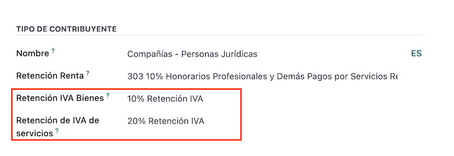
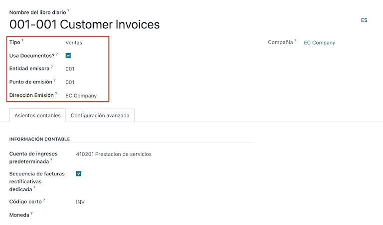
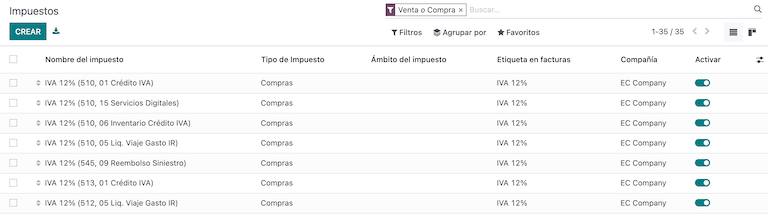
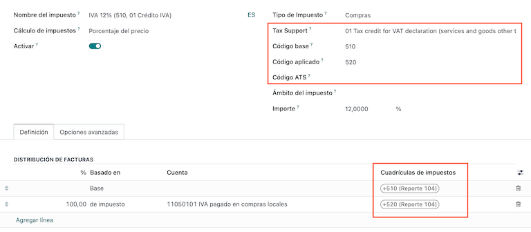
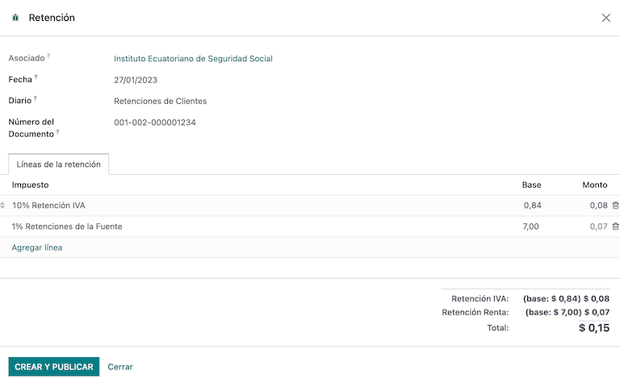
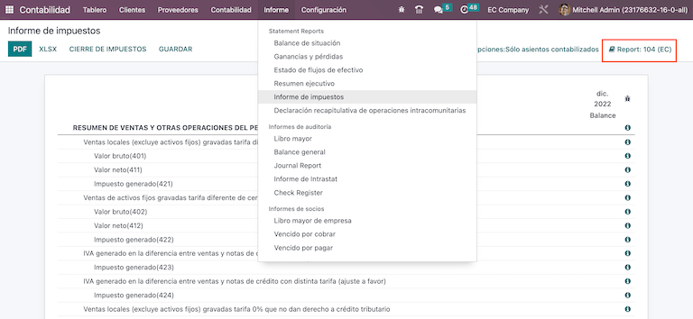
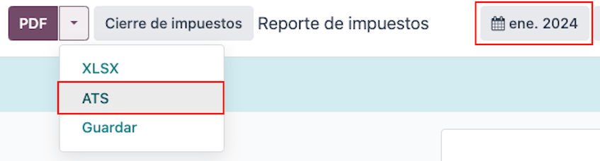

เอกวาดอร์¶
บทนำ¶
ด้วยการแปลเป็นภาษาเอกวาดอร์คุณสามารถสร้างเอกสารอิเล็กทรอนิกส์XML งบการเงินที่มีลายเซ็นอิเล็กทรอนิกส์และการเชื่อมต่อโดยตรงสรรพากร เอสอาร์ไอ
เอกสารที่รองรับมีใบแจ้งหนี้, เครดิตสลิป, เดบิตสลิป, การจัดซื้อการชำระบัญชีและการยึดทรัพย์
โลคัลไลเซชันยังรวมถึงฟังก์ชั่นอัตโนมัติที่สามารถคาดการณ์สถานการณ์การยึดได้อย่างง่ายดายภาษีที่ต้องชำระต่อใบแจ้งหนี้การจัดซื้อจัดจ้าง
See also
โปรแกรมทัวร์ - ท้องถิ่นเอกวาดอร์< https://www.youtube.com/watch?v=BQOXVSDeeK8 >`_
กวดวิชาสมาร์ท - ท้องถิ่นเอกวาดอร์< https://www.odoo.com/slides/smart-tutorial-localizacion-de-ecuador-170 >`_
รายการคำศัพท์¶
ต่อไปนี้เป็นคำที่มีความสำคัญต่อการแปลเป็นภาษาเอกวาดอร์:
การกำหนดค่า¶
การติดตั้งโมดูล¶
:ref:` ติดตั้ง <general / Install>` โมดูลต่อไปนี้เพื่อรับทั้งหมดคุณสมบัติของการแปลเป็นภาษาเอกวาดอร์:
ชื่อ-นามสกุล |
ชื่อทางเทคนิค |
คำแนะนำ |
|---|---|---|
: guilabel:` เอกวาดอร์ - บัญชี ` |
|
ค่าเริ่มต้น: doc:` แพคเกจการแปลทางการเงิน</ การแปลทางการเงิน> `,เพิ่มคุณสมบัติทางบัญชีสำหรับการโลคัลไลเซชันของเอกวาดอร์การกำหนดค่าขั้นต่ำที่จำเป็นสำหรับการดำเนินงานในนามของ บริษัทเอกวาดอร์ตาม SRI ( servicio deค่าเช่าภายใน) การติดตั้งโมดูลจะโหลดโดยอัตโนมัติ: แผนภูมิบัญชี, ภาษี, ประเภทเอกสาร, ประเภทการสนับสนุนภาษี นอกจากนี้การสร้างแบบฟอร์ม 103 และ 104 เป็นไปโดยอัตโนมัติ |
:guilabel:` เอกวาดอร์ บัญชีแลกเปลี่ยนข้อมูลอิเล็กทรอนิกส์ |
|
รวมถึงข้อกำหนดทางเทคนิคและฟังก์ชั่นทั้งหมดที่จำเป็นในการสร้างและใช้งานvalidate: doc:` ไฟล์อิเล็กทรอนิกส์<../ การบัญชี / ใบแจ้งหนี้ลูกค้า / ใบแจ้งหนี้อิเล็กทรอนิกส์> `, อิงตามเอกสารทางเทคนิคที่ออกโดย SRI เอกสารการอนุญาตประกอบด้วยใบแจ้งหนี้, เครดิตสลิป, เดบิตสลิป, หักบัญชีและการซื้อ |
รายงานบัญชีประเทศเอกวาดอร์ |
`l10n-ec _ รายงาน ` |
รวมถึงข้อกำหนดทางเทคนิคและคุณสมบัติทั้งหมดสำหรับการสร้างตาราง 103104。 |
:guilabel:` เอกวาดอร์ - รายงาน ATS ` |
|
รวมถึงข้อกำหนดทางเทคนิคและคุณสมบัติทั้งหมดสำหรับการสร้าง ATSรายงานไฟล์ XML พร้อมอัปโหลดไปยัง * สูตร DIMM * |
เว็บไซต์เอกวาดอร์ |
`l10n-ec _ เว็บไซต์ _ ขาย ` |
รวมถึงข้อกำหนดทางเทคนิคและฟังก์ชั่นทั้งหมดที่จำเป็นสำหรับการสร้างอัตโนมัติใบแจ้งหนี้อิเล็กทรอนิกส์สำหรับการขายเว็บไซต์ |
:guilabel:` จุดขายของเอกวาดอร์ |
|
รวมถึงข้อกำหนดทางเทคนิคและฟังก์ชั่นทั้งหมดที่จำเป็นสำหรับการสร้างอัตโนมัติใบแจ้งหนี้อิเล็กทรอนิกส์สำหรับการขาย POS |
Note
เมื่อคุณติดตั้งฐานข้อมูลจากศูนย์และเลือก "เอกวาดอร์" เป็นประเทศOdoo จะติดตั้งโมดูลพื้นฐานโดยอัตโนมัติ: guilabel:` เอกวาดอร์ -การบัญชี"
กำหนดค่าบริษัทของคุณ¶
ในการกำหนดค่าข้อมูล บริษัท ของคุณโปรดไปที่: guilabel: แอพ "ติดต่อ"และค้นหาชื่อ บริษัท ของคุณหรือเปิดใช้งาน: อ้าง:โหมดนักพัฒนา<developer mode>, จากนั้นไปที่: menuselection:` บริษัท -> รายละเอียดการติดต่อ' จากนั้นไปที่:แก้ไขรายชื่อเพื่อกำหนดค่าข้อมูลต่อไปนี้
ตรวจสอบด้านบน: guilabel: ตัวเลือก "บริษัท"
อัปโหลดโลโก้ของ บริษัท และบันทึก

เอกสารอิเล็กทรอนิกส์¶
หากต้องการอัพโหลดข้อมูลเอกสารอิเล็กทรอนิกส์ของคุณ โปรดไปที่: menusesection: "บัญชี -> การกำหนดค่า -> การตั้งค่า" และค้นหา:command:` การแปลเป็นภาษาเอกวาดอร์
กำหนดค่าข้อมูลต่อไปนี้:
:guilabel:`ชื่อทางกฎหมายของ บริษัท
:guilabel:` ใช้ production server': หากบริษัทของคุณเป็นจะมีการทำเอกสารอิเล็กทรอนิกส์ในสภาพแวดล้อมการผลิต ถ้าคุณต้องการสภาพแวดล้อมการทดสอบโดยใช้เอกสารอิเล็กทรอนิกส์แล้วเก็บไว้ช่องทำเครื่องหมายไม่ถูกเลือก
: guilabel: "ระบบ": เลือก บริษัท ของคุณเป็น บริษัท ทั่วไปหรือได้รับสิทธิ์ RIMPE
: guilabel: "บังคับให้เก็บสมุดบัญชี": หากบริษัทมีเงื่อนไขนี้
:guilabel:` ผิดนัดชำระภาษีหัก ณ ที่จ่าย
: guilabel: "ปัญหาการกักตัว": หาก บริษัท ของคุณต้องการทำเช่นนี้ให้เลือกกล่องกาเครื่องหมายเพื่อดำเนินการอายัดทรัพย์ทางอิเล็กทรอนิกส์
:guilabel:` สินค้าอุปโภคบริโภค ณ ที่จ่าย': ใส่รหัส ณ ที่จ่ายคุณซื้อสินค้า
:guilabel:` บริการหัก ณ ที่จ่าย': ใส่รหัสหัก ณ ที่จ่ายซื้อบริการ
:: guilabel:` บัตรเครดิตที่ถูกระงับ': ใส่รหัสที่ถูกระงับคุณช้อปปิ้งด้วยบัตรเครดิต
:guilabel:` หมายเลขผู้รับผิดชอบในการยึดทรัพย์': กรอกหมายเลขผู้รับผิดชอบในการยึดทรัพย์ของบริษัทหมายเลขมติ (ถ้าใช้กับ บริษัท ของคุณ)
:guilabel:` E-Certificate File': อัพโหลด E-Certificate และรหัสผ่านและบันทึก
: guilabel: "หมายเลขภาษีพิเศษ": หาก บริษัท ของคุณมีคุณสมบัติดังต่อไปนี้ผู้เสียภาษีพิเศษกรุณากรอกภาษีที่เกี่ยวข้องหมายเลขผู้บริจาค

Note
เมื่อกำหนดค่าภาษีหัก ณ ที่จ่ายในเมนูการกำหนดค่าแนะนำภาษีหัก ณ ที่จ่าย สำหรับผู้ค้าในประเทศที่ไม่ได้กำหนดภาษีหัก ณ ที่จ่ายเท่านั้นตามประเภทของผู้เสียภาษี* นอกจากนี้การตั้งค่าภาษีหัก ณ ที่จ่ายของบัตรเครดิตคือใช้เมื่อใช้วิธีการชำระเงินด้วยบัตรเครดิตหรือเดบิต SRI เสมอ
หักภาษี ณ ที่จ่าย¶
การกำหนดค่านี้ใช้ได้เฉพาะในกรณีที่คุณมีสิทธิ์ถูกระงับ*ตัวแทนของ SRI * มิฉะนั้นจะข้ามขั้นตอนนี้ไป กำหนดค่าภาษีมูลค่าเพิ่มของคุณหักเงิน ไปที่: เลือกเมนู: บัญชี -> บัญชี ->การกำหนดค่า -> SRI เอกวาดอร์: ประเภทผู้เสียภาษี SRI.
คุณต้องกำหนดค่าเปอร์เซ็นต์การหัก ณ ที่จ่ายสำหรับแต่ละประเภทผู้เสียภาษีโปรดระบุ: guilabel: "หัก ณ ที่จ่ายภาษีมูลค่าเพิ่มของสินค้า" และ: guilabel: "หักภาษี ณ ที่จ่ายสำหรับบริการ"
Tip
ถ้า: guilabel: "ประเภทผู้เสียภาษี" เป็น "RIMPE" ยังกำหนดค่าguilabel: "กำไรหัก ณ ที่จ่าย" เปอร์เซ็นต์
จุดเครื่องพิมพ์¶
หากต้องการกำหนดค่าจุดเครื่องพิมพ์ไปที่: ส่วนเมนู: `บัญชี -->การกำหนดค่า -> การบัญชี: บันทึกประจำวัน
ต้องกำหนดค่าจุดเครื่องพิมพ์สำหรับเอกสารอิเล็กทรอนิกส์แต่ละประเภทสิ่งที่คุณต้องการ ตัวอย่าง: ใบแจ้งหนี้ลูกค้า, เครดิตสลิป, เดบิต สลิป
สำหรับแต่ละจุดเครื่องพิมพ์คุณต้องกำหนดค่าต่อไปนี้:
: guilabel: "ชื่อวารสาร": ในรูปแบบ "[หน่วยงานปล่อย] - [จุดปล่อย]"[ประเภทของเอกสาร] ตัวอย่างเช่น: `001-001 เอกสารการขาย `
: guilabel: "ประเภท": ประเภทของการทำบัญชีรายวันเลือก "ขาย"
Use Documents?: this checkbox is automatically checked, leave it checked.
: guilabel: "Emission Entity": กำหนดค่าหมายเลขกลไก
:guilabel:` จุดเปิดตัว': กำหนดค่าจุดเครื่องพิมพ์
:guilabel:` ที่อยู่ปล่อย': กำหนดค่าที่อยู่ของกลไก
: guilabel: `บัญชีรายได้เริ่มต้น': กำหนดค่าบัญชีรายได้เริ่มต้น
: guilabel: "ลำดับเครดิตเฉพาะ": ตรวจสอบช่องทำเครื่องหมายหาก * เครดิตหมายเหตุ* จะถูกสร้างขึ้นจากบันทึกจุดเครื่องพิมพ์นี้
: guilabel: "รหัสย่อ": นี่เป็นรหัสเฉพาะของลำดับรายการบัญชีป้อนรหัส 5 หลักที่ไม่ซ้ำกันเช่น:
VT001
ใบแจ้งหนี้ของลูกค้า เครดิตสลิป และบัตรเดบิต ต้องใช้สมุดบัญชีเดียวกันเช่น: guilabel: "จุดปล่อย" และ: guilabel: "จุดทางกายภาพ" ควรแต่ละวารสารมีเอกลักษณ์เฉพาะตัว
Note
ใน: guilabel: "การตั้งค่าขั้นสูง" แท็บ, ตรวจสอบ: guilabel: "อิเล็กทรอนิกส์"เปิดใช้งานช่องทำเครื่องหมาย "ใบแจ้งหนี้" ในเอกวาดอร์
See also
：doc:`/ บัญชี / ลูกค้า _ ใบแจ้งหนี้ / e-Invoice
กักตัว¶
ต้องกำหนดบันทึกประจำวันหัก ณ ที่จ่าย,โดย: menusesection:` การบัญชี -> การกำหนดค่า -> การบัญชี: สมุดรายวันคุณต้องกำหนดค่าข้อมูลต่อไปนี้:
: guilabel: "ชื่อวารสาร": ในรูปแบบ "[หน่วยงานปล่อย] - [จุดปล่อย]"[ประเภทไฟล์]` ตัวอย่างเช่น:
001-001 หักภาษี ณ ที่จ่าย: guilabel: "ประเภท": ประเภทของบัญชีรายวันเลือก "เบ็ดเตล็ด"
: guilabel: "ประเภทหัก ณ ที่จ่าย": กำหนดค่าการซื้อ ณ ที่จ่าย
Use Documents?: this checkbox is automatically checked, leave it checked.
: guilabel: "Emission Entity": กำหนดค่าหมายเลขกลไก
:guilabel:` จุดเปิดตัว': กำหนดค่าจุดเครื่องพิมพ์
:guilabel:` ที่อยู่ปล่อย': กำหนดค่าที่อยู่ของกลไก
:guilabel:` บัญชีเริ่มต้น': กำหนดค่าบัญชีรายได้เริ่มต้น
: guilabel: "รหัสย่อ": นี่เป็นรหัสเฉพาะของลำดับรายการบัญชีป้อนรหัส 5 หลักที่ไม่ซ้ำกันเช่น:
RT001

Note
ใน: guilabel: "การตั้งค่าขั้นสูง" แท็บ, ตรวจสอบ: guilabel: "อิเล็กทรอนิกส์"ช่องทำเครื่องหมาย "ใบแจ้งหนี้" สำหรับการส่งใบแจ้งหนี้อิเล็กทรอนิกส์กักตัวไว้
ซื้อ Clearing¶
เมื่อใช้การชำระบัญชีการซื้อจะต้องสร้างบันทึกประจำวันที่เฉพาะเจาะจงโปรดไปที่: menusesection:` การบัญชี --> การกำหนดค่า --> การบัญชี: สมุดรายวัน และกำหนดค่าข้อมูลต่อไปนี้:
: guilabel: "ชื่อวารสาร": ในรูปแบบ "[หน่วยงานปล่อย] - [จุดปล่อย]"[ประเภทไฟล์]`, ตัวอย่างเช่น:
001-001 กักตัว: guilabel: "ประเภท": ประเภทของบัญชีรายวันเลือก "เบ็ดเตล็ด"
:guilabel:` ซื้อชำระบัญชี': ตรวจสอบช่องทำเครื่องหมายเพื่อเปิดใช้งานการซื้อการชำระบัญชี
Use Documents?: this checkbox is automatically checked, leave it checked.
: guilabel: "Emission Entity": กำหนดค่าหมายเลขกลไก
:guilabel:` จุดเปิดตัว': กำหนดค่าจุดเครื่องพิมพ์
:guilabel:` ที่อยู่ปล่อย': กำหนดค่าที่อยู่ของกลไก
: guilabel: "รหัสย่อ": นี่เป็นรหัสเฉพาะของลำดับรายการบัญชีป้อนรหัส 5 หลักที่ไม่ซ้ำกันเช่น:
RT001

Note
ใน: guilabel: "การตั้งค่าขั้นสูง" แท็บ, ตรวจสอบ: guilabel: "อิเล็กทรอนิกส์"ช่องทำเครื่องหมาย "ใบแจ้งหนี้" สำหรับการส่งใบแจ้งหนี้อิเล็กทรอนิกส์กักตัวไว้
กำหนดค่าข้อมูลหลัก¶
รายการบัญชี¶
:doc:`ตารางบัญชี</ การบัญชี / การเริ่มต้น / แผนภูมิบัญชี > `ติดตั้งเป็นส่วนหนึ่งของชุดข้อมูลที่รวมอยู่ในค่าเริ่มต้นโมดูลโลคัลไลเซชันบัญชีจะถูกแมปโดยอัตโนมัติใน Taxes, Defaultเจ้าหนี้ลูกหนี้เริ่มต้น
ตารางบัญชีในเอกวาดอร์อ้างอิงจากเวอร์ชั่นล่าสุดหน่วยงานกำกับดูแลองค์กรซึ่งแบ่งออกเป็นหลายประเภทเข้ากันได้กับการบัญชี NIIF
คุณสามารถเพิ่มหรือลบบัญชีได้ตามความต้องการของบริษัท
ผลิตภัณฑ์¶
นอกเหนือจากข้อมูลพื้นฐานในผลิตภัณฑ์ที่คุณต้องเพิ่มการกำหนดค่ารหัสหักภาษี ณ ที่จ่าย (ภาษี) ที่เกี่ยวข้อง
ไปที่: ใต้แท็บ: ส่วนเมนู: "การบัญชี -> ผู้ให้บริการ: ผลิตภัณฑ์"

ติดต่อ¶
กำหนดค่าข้อมูลต่อไปนี้เมื่อสร้างผู้ติดต่อ:
ถ้าเป็นการติดต่อกับ RUC ติ๊กที่ด้านบน: guilabel: ตัวเลือก "บริษัท" หรือcheck: guilabel: "บุคคล" ถ้าเป็นการติดต่อกับ cedula หรือหนังสือเดินทาง
:guilabel:`ชื่อจริง
: guilabel: "ที่อยู่":: guilabel: "ถนน" คือการยืนยันใบแจ้งหนี้อิเล็กทรอนิกส์
:guilabel:` หมายเลขประจำตัว': เลือกประเภทประจำตัว
RUC,Cedula หรือพาสปอร์ต: guilabel: "ประเภทผู้เสียภาษี": เลือกประเภทผู้เสียภาษีอากร
โทรศัพท์
อีเมล์: guilabel
Note
: guilabel: ภาษีมูลค่าเพิ่มรวมอยู่ในการกำหนดค่าของ "ประเภทผู้เสียภาษี SRI"กำไรจะถูกหักเมื่อคุณใช้ติดต่อนี้ในการเรียกเก็บเงินของผู้ขายแล้วสร้างการยึดทรัพย์จากตรงนั้น
ดูภาษีของคุณ¶
ในฐานะที่เป็นส่วนหนึ่งของโมดูลโลคัลไลเซชันภาษีจะผ่านการกำหนดค่าและบัญชีทางการเงินที่เกี่ยวข้อง
กำหนดค่าตัวเลือกต่อไปนี้โดยอัตโนมัติ:
: guilabel: "การสนับสนุนด้านภาษี": กำหนดค่าเฉพาะในภาษี IVA ตัวเลือกนี้มีประโยชน์มากในการลงทะเบียนซื้อภาษีหัก ณ ที่จ่าย
: guilabel: "รหัส ATS": เฉพาะภาษีเงินได้หัก ณ ที่จ่ายรหัส, ที่สำคัญเมื่อคุณลงทะเบียนสำหรับการหักเงิน
: guilabel: "Tax Grid": ในกรณีของภาษี IVA โปรดกำหนดรหัสของแบบฟอร์ม 104กรณีรหัสหักภาษี ณ ที่จ่าย กำหนดค่ารหัสของแบบ 103
:: guilabel: "ชื่อภาษี":
สำหรับภาษี IVA โปรดตั้งค่ารูปแบบชื่อเป็น: "IVA [เปอร์เซ็นต์] (104, [รหัสตาราง] [ภาษีรหัสการสนับสนุน [การสนับสนุนด้านภาษีโดยย่อ])
สำหรับรหัสหักภาษีเงินได้ ณ ที่จ่าย กรุณากำหนดรูปแบบชื่อเป็น "รหัส ATS [เปอร์เซ็นต์]กักตัว [กักตัว ชื่อ]
หลังจากการติดตั้งโมดูลเอกวาดอร์ภาษีที่พบมากที่สุดคือการกำหนดค่าอัตโนมัติ หากคุณต้องการสร้างเพิ่มเติมคุณสามารถการทำเช่นนี้คุณต้องขึ้นอยู่กับการกำหนดค่าที่มีอยู่ภาษี
ตรวจสอบชนิดของเอกสาร¶
รายการทางบัญชีบางอย่างเช่น * ใบแจ้งหนี้ของลูกค้า * และ * ใบแจ้งหนี้ของผู้ขาย *จำแนกตามประเภทเอกสาร เหล่านี้ถูกกำหนดโดยกระทรวงการคลังของรัฐบาลผู้มีอำนาจ ซึ่งในกรณีนี้คือ ศอฉ.
เอกสารแต่ละประเภทสามารถมีลำดับที่ไม่ซ้ำกันในแต่ละไดอารี่การจัดสรร ในฐานะที่เป็นส่วนหนึ่งของการแปลภาษาเอกสารประเภทรวมถึงประเทศที่มีเอกสารบังคับ ข้อมูลจะถูกสร้างขึ้นด้วยดำเนินการโดยอัตโนมัติเมื่อติดตั้งโมดูลตำแหน่ง
โดยค่าเริ่มต้นข้อมูลที่จำเป็นสำหรับประเภทของเอกสารจะรวมอยู่แล้ว ดังนั้นผู้ใช้ไม่จำเป็นต้องกรอกอะไรตรงนั้น

กระบวนการทำงาน¶
หลังจากกำหนดค่าฐานข้อมูลแล้วคุณสามารถลงทะเบียนเอกสารได้
เอกสารการขาย¶
ใบแจ้งหนี้ของลูกค้า¶
: guilabel: "ใบแจ้งหนี้ลูกค้า" เป็นไฟล์อิเล็กทรอนิกส์และเมื่อตรวจสอบแล้วเอกสารเหล่านี้สามารถมาจากใบสั่งขายของคุณหรือคู่มือ พวกเขาจะต้องมีข้อมูลต่อไปนี้:
customer:พิมพ์ข้อมูลลูกค้า
: guilabel: "Journal": เลือกตัวเลือกที่ตรงกับจุดเครื่องพิมพ์ใบแจ้งหนี้ของลูกค้า
: guilabel: "ประเภทเอกสาร": พิมพ์ประเภทเอกสาร "(01) ใบแจ้งหนี้" ตามรูปแบบนี้
:guilabel:` วิธีการชำระเงิน (SRI)`: เลือกวิธีการออกใบแจ้งหนี้การจ่ายเงิน
: guilabel: "สินค้า": ระบุสินค้าที่มีภาษีถูกต้อง

แบบฟอร์มเครดิตลูกค้า¶
:doc:` แบบฟอร์มเครดิตลูกค้า<../ บัญชี / ลูกค้า _ ใบแจ้งหนี้ / ประวัติเครดิต > `เป็นเอกสารอิเล็กทรอนิกส์เมื่อตรวจสอบแล้วจะส่งให้ รฟท. จำเป็นต้องตรวจสอบ(ทางไปรษณีย์) ใบแจ้งหนี้เพื่อลงทะเบียนสลิปเครดิต มีใบแจ้งหนี้ปุ่มที่เรียกว่า "guilabel": "เครดิตสลิป" คลิกที่ปุ่มนี้เพื่อกระโดดกรอก: guilabel: แบบฟอร์ม "สร้างสลิปเครดิต" แล้วกรอกข้อมูลต่อไปนี้ข้อมูล:
: guilabel: "วิธีการเครดิต": เลือกประเภทของวิธีการเครดิต
:guilabel:` การคืนเงินบางส่วน': ใช้ตัวเลือกนี้เมื่อคุณต้องการพิมพ์ครั้งแรกจำนวนเอกสารและไม่ว่าจะเป็น L / C บางส่วน
: guilabel: "คืนเงินเต็มจำนวน": ใช้ตัวเลือกนี้หากสลิปเครดิตคือการคืนเงินเต็มจำนวนใบแจ้งหนี้ซึ่งคุณต้องตรวจสอบและยืนยัน L / C โดยอัตโนมัติด้วยใบแจ้งหนี้
: guilabel: "คืนเงินเต็มจำนวนและใบแจ้งหนี้ใหม่": ถ้า L / Cหมายเหตุ คือ Total Invoice คุณจะต้องสร้าง Credit Slip โดยอัตโนมัติตรวจสอบและกระทบยอดกับใบแจ้งหนี้และสร้างร่างใหม่โดยอัตโนมัติใบแจ้งหนี้
: guilabel: "เหตุผล": เหตุผลในการพิมพ์เครดิตสลิป
: guilabel: "ย้อนกลับวันที่": เลือก: guilabel: "เฉพาะ" ตัวเลือก
: guilabel: "วันที่ยกเลิก": พิมพ์วันที่
: guilabel: "ใช้บันทึกประจำวันที่เฉพาะเจาะจง": เลือกจุดพิมพ์บัตรเครดิตของคุณโปรดทราบว่าหากคุณต้องการใช้ไดอารี่เดียวกันกับไดอารี่ต้นฉบับโปรดปล่อยให้ว่างเปล่าใบแจ้งหนี้
หลังจากดูคุณสามารถคลิกที่: guilabel: "ย้อนกลับ" ปุ่ม

เมื่อใช้: guilabel: ตัวเลือก "คืนเงินบางส่วน" คุณสามารถเปลี่ยนได้จำนวนเงิน L / C แล้วตรวจสอบ ก่อนที่จะตรวจสอบ L / Cโปรดทราบว่าโปรดตรวจสอบข้อมูลต่อไปนี้:
customer:พิมพ์ข้อมูลลูกค้า
: guilabel: "บันทึกประจำวัน": เลือกจุดพิมพ์สลิปเครดิตของลูกค้า
: guilabel: "ประเภทเอกสาร": นี่คือประเภทของเอกสาร"(04) เครดิตสลิป"
: guilabel: "สินค้า": ต้องระบุสินค้าที่มีภาษีถูกต้อง

บัตรเดบิตสำหรับลูกค้า¶
: guilabel: "สลิปเดบิตลูกค้า" เป็นไฟล์อิเล็กทรอนิกส์ที่ตรวจสอบแล้วส่งให้ SRI จำเป็นต้องตรวจสอบ (เผยแพร่)ใบแจ้งหนี้เพื่อลงทะเบียนสลิปเดบิต มีปุ่มบนใบแจ้งหนี้named: guilabel: 'บัตรเดบิต' คลิกที่ปุ่มนี้เพื่อข้ามไปที่: guilabel: แบบฟอร์ม "สร้างสลิปเดบิต" จากนั้นกรอกข้อมูลต่อไปนี้:
: guilabel: "เหตุผล": เหตุผลในการพิมพ์สลิปเดบิต
:guilabel:` Debit Slip Date': เลือก:guilabel:` Option เฉพาะ
:guilabel:` คัดลอกบรรทัด': เลือกตัวเลือกนี้หากคุณต้องการลงทะเบียนเดบิตโปรดสังเกตบรรทัดเดียวกันในใบแจ้งหนี้
: guilabel: "ใช้บันทึกประจำวันที่เฉพาะเจาะจง": เลือกจุดพิมพ์บัตรเครดิตของคุณโปรดทราบว่าหากคุณต้องการใช้ไดอารี่เดียวกันกับไดอารี่ต้นฉบับโปรดปล่อยให้ว่างเปล่าใบแจ้งหนี้
หลังจากการตรวจสอบคุณสามารถคลิกที่: guilabel: "สร้างบัตรเดบิต" ปุ่ม

คุณสามารถเปลี่ยนจำนวนเงินในบัตรเดบิตและตรวจสอบได้ตรวจสอบสลิปเดบิตเพื่อดูข้อมูลต่อไปนี้
customer:พิมพ์ข้อมูลลูกค้า
: guilabel: "บันทึกประจำวัน": เลือกจุดพิมพ์สลิปเครดิตของลูกค้า
: guilabel: "ประเภทเอกสาร": นี่คือประเภทของเอกสาร"(05) เดบิตสลิป"
: guilabel: "สินค้า": ต้องระบุสินค้าที่มีภาษีถูกต้อง

ลูกค้าถูกยึด¶
: guilabel: "ลูกค้า ณ ที่จ่าย" คือไฟล์ที่ไม่ใช่อิเล็กทรอนิกส์บริษัท เอกสารนี้ออกโดยลูกค้าเพื่อสมัครหักยอดขาย
ต้องมีใบแจ้งหนี้ที่ผ่านการตรวจสอบ (โพสต์) เพื่อลงทะเบียนลูกค้าหักเงิน ในใบแจ้งหนี้มีชื่อ:guilabel:` เพิ่ม"หยุดชั่วคราว" คลิกที่ปุ่มนี้เพื่อข้ามไปที่: guilabel: "ลูกค้า"แบบฟอร์มการหัก ณ ที่จ่าย จากนั้นกรอกข้อมูลดังต่อไปนี้
: guilabel: "หมายเลขเอกสาร": พิมพ์หมายเลขยึด
:guilabel:` หักภาษี ณ ที่จ่าย Line': เลือกภาษีของลูกค้ากักตัวไว้
ตรวจสอบก่อนตรวจสอบว่ามีการหักภาษี ณ ที่จ่าย เท่าใดเช่นเดียวกับเอกสารต้นฉบับ
เอกสารการจัดซื้อ¶
การเรียกเก็บเงินของผู้ขาย¶
: guilabel: "บิลผู้ขาย" คือไฟล์ที่ไม่ใช่อิเล็กทรอนิกส์ของ บริษัท ของคุณเมื่อบริษัทของคุณสร้างซื้อ
ใบเรียกเก็บเงินสามารถสร้างได้จากใบสั่งซื้อหรือสร้างด้วยตนเองและต้องประกอบด้วยข้อมูลต่อไปนี้
:guilabel:`supplier':พิมพ์ข้อมูลผู้ขาย
: guilabel: "วันที่เรียกเก็บเงิน": เลือกวันที่ใบแจ้งหนี้
: guilabel: "บันทึกประจำวัน": นี่คือบันทึกประจำวันของบิลผู้ขาย
document type:นี่คือ document type`(01) invoice
:guilabel:` หมายเลขเอกสาร': พิมพ์หมายเลขเอกสาร
:guilabel:` วิธีการชำระเงิน (SRI)`: เลือกวิธีการออกใบแจ้งหนี้การจ่ายเงิน
: guilabel: "สินค้า": ระบุสินค้าที่มีภาษีถูกต้อง

Important
เมื่อสร้างภาษีหัก ณ ที่จ่ายสำหรับการจัดซื้อให้ตรวจสอบฐาน (จำนวนเงินพื้นฐาน)เป็นสิ่งที่ถูกต้อง หากท่านมีความประสงค์ที่จะ: guilabel: "บิลผู้ขาย", คลิก: guilabel: "แก้ไข" ปุ่ม ไม่เช่นนั้นจะเริ่มตั้งแต่: guilabel: แท็บ "Diary Items" คลิก: guilabel: "Edit" ปุ่มและตั้งค่าปรับให้เข้ากับสถานที่ที่คุณอยากไป
ซื้อ Clearing¶
guilabel: "การชำระบัญชีการซื้อ" เป็นไฟล์อิเล็กทรอนิกส์ที่เมื่อข้อมูลที่ตรวจสอบแล้วส่งไปให้ SRI
บริษัทออกเอกสารอิเล็กทรอนิกส์ดังกล่าวเมื่อซื้อซัพพลายเออร์ไม่ได้ออกใบแจ้งหนี้เนื่องจากหนึ่งหรือหลายกรณีต่อไปนี้:
ให้บริการโดยผู้ที่ไม่ใช่ชาวเอกวาดอร์
บริการจากบริษัทต่างชาติ ไม่มีภูมิลำเนาหรือสถานประกอบการเอกวาดอร์
ซื้อสินค้าหรือบริการจากบุคคลธรรมดาที่ไม่ได้ขึ้นทะเบียนกับสถานประกอบการมหาวิทยาลัยเหรินหมินแห่งประเทศจีนที่ไม่สามารถออกเนื่องจากมีระดับวัฒนธรรมหรือความอดทนใบเสร็จรับเงินการขายหรือใบแจ้งหนี้ของลูกค้า
การเบิกค่าซื้อสินค้าหรือบริการจากพนักงานการพึ่งพา (พนักงานประจำ)
การบริการของสมาชิกสภาเพื่อการใช้อำนาจหน้าที่ของตนฟังก์ชัน
เอกสารอิเล็กทรอนิกส์ประเภทนี้สามารถเริ่มต้นจาก: guilabel:` ใบสั่งซื้อ ' หรือด้วยตนเองจาก: guilabel:` บิลผู้ขาย `มุมมองแบบฟอร์ม จะต้องมีข้อมูลต่อไปนี้
:guilabel:`supplier':พิมพ์ข้อมูลผู้ขาย
:guilabel:` สมุดบันทึก'::: guilabel:` ซื้อ สมุดบันทึกเลือกใช้จุดพิมพ์ที่ถูกต้องในการชำระบัญชี
:guilabel:` document type`: นี่คือ document type` (03) ซื้อการชำระบัญชี
:guilabel:` หมายเลขเอกสาร': พิมพ์หมายเลขเอกสาร (ลำดับ) และคุณจะเพียงดำเนินการครั้งเดียวลำดับจะถูกกำหนดโดยอัตโนมัติสำหรับเอกสารต่อไป
:guilabel:` วิธีการชำระเงิน (SRI)`: เลือกวิธีการออกใบแจ้งหนี้การจ่ายเงิน
: guilabel: "สินค้า": ระบุสินค้าที่มีภาษีถูกต้อง
หลังจากดูข้อมูลคุณสามารถตรวจสอบ: guilabel:` ซื้อการชำระบัญชี

ซื้อ ณ ที่จ่าย¶
: guilabel: "การซื้อหักภาษี ณ ที่จ่าย" เป็นไฟล์อิเล็กทรอนิกส์ที่เมื่อข้อมูลที่ตรวจสอบแล้วส่งไปให้ SRI
เพื่อลงทะเบียนใบแจ้งหนี้ต้องอยู่ในสถานะที่ถูกต้องa:guilabel: "ซื้อภาษีหัก ณ ที่จ่าย" บนใบแจ้งหนี้มีปุ่มชื่อ:guilabel:` เพิ่ม snap 'คลิกปุ่มนี้เพื่อกำหนดเส้นทางไปยัง: guilabel: แบบฟอร์ม "อายัด" แล้วกรอกข้อมูลต่อไปนี้
:guilabel:` หมายเลขเอกสาร': พิมพ์หมายเลขเอกสาร (ลำดับ) และคุณจะเพียงดำเนินการครั้งเดียวลำดับจะถูกกำหนดโดยอัตโนมัติสำหรับเอกสารต่อไป
: guilabel: "หักภาษี ณ ที่จ่าย": ภาษีตามการกำหนดค่าของผลิตภัณฑ์และซัพพลายเออร์ที่คุณควรตรวจสอบภาษีและการสนับสนุนด้านภาษีนั้นถูกต้องหากไม่ถูกต้องคุณสามารถแก้ไขและเลือกได้การสนับสนุนด้านภาษีและภาษีที่ถูกต้อง
เมื่อตรวจสอบข้อมูลแล้วสามารถตรวจสอบได้: guilabel: "ซ่อน"

Note
คุณไม่สามารถเปลี่ยนการสนับสนุนภาษีที่ไม่ได้รวมอยู่ในใช้สำหรับ: guilabel: การกำหนดค่าภาษีสำหรับ "บิลผู้ขาย" เอาเลยภาษีที่ใช้กับรายการต่อไปนี้: guilabel: "บิลผู้ขาย" และการเปลี่ยนแปลง: guilabel: "การสนับสนุนด้านภาษี"
ภาษีหัก ณ ที่จ่ายสามารถแบ่งได้เป็น 2 บรรทัดขึ้นไป ขึ้นอยู่กับไม่ว่าจะใช้เปอร์เซ็นต์การหักเงินตั้งแต่ 2 เปอร์เซ็นต์ขึ้นไป
Example
ระบบแนะนำให้หัก ณ ที่จ่าย 30% ภาษีมูลค่าเพิ่มภายใต้การสนับสนุนภาษี 01 คุณสามารถเพิ่มภาษีมูลค่าเพิ่ม ณ ที่จ่าย 70% ในธนาคารใหม่ที่มีภาษีสนับสนุนเท่าเดิมตราบใดที่ฐานทั้งหมดตรงกับฐานทั้งหมดระบบจะอนุญาตจาก: guilabel: "บิลผู้ขาย".
อีคอมเมิร์ซ¶
: อ้าง:`โมดูลรายงาน ATS <ecuador / ATS> เปิดใช้งานคุณสมบัติต่อไปนี้:
เลือกวิธีการชำระเงิน SRI ในการกำหนดค่าของแต่ละวิธีการชำระเงิน
ลูกค้าสามารถป้อนประเภทบัตรประจำตัวและตัวตนด้วยตนเองหมายเลขในกระบวนการชำระเงินอีคอมเมิร์ซ
สร้างใบแจ้งหนี้อิเล็กทรอนิกส์ที่มีประสิทธิภาพสำหรับเอกวาดอร์โดยอัตโนมัติภายในสิ้นปีขั้นตอนการชำระเงิน
การกำหนดค่า¶
เว็บไซต์¶
หากต้องการสร้างใบแจ้งหนี้หลังจากขั้นตอนการชำระเงินไปที่: menuselection:` เว็บไซต์ -> การกำหนดค่า -> การตั้งค่า และเปิดใช้งาน: guilabel: ตัวเลือก "ใบแจ้งหนี้อัตโนมัติ" ตั้งอยู่ที่: guilabel: "ใบแจ้งหนี้"ส่วน
Tip
แม่แบบอีเมลของใบแจ้งหนี้สามารถแก้ไขได้จาก: guilabel:` ใบแจ้งหนี้ฟิลด์ "แม่แบบอีเมล" อยู่ภายใต้: guilabel: "ใบแจ้งหนี้อัตโนมัติ" ตัวเลือก
Important
บันทึกการขายสำหรับการออกใบสั่งเป็นครั้งแรกในลำดับต่อไปนี้ใน: guilabel: ลำดับความสำคัญในเมนู "วารสาร"
ผู้ให้บริการชำระเงิน¶
เปิดใช้งานผู้ให้บริการการชำระเงินที่ใช้จับภาพอีคอมเมิร์ซชำระเงินไปที่: ส่วนเมนู: เว็บไซต์ -> การกำหนดค่า -> การชำระเงินส่วนของผู้ให้บริการและคลิก: guilabel: ดูผู้ให้บริการอื่น ๆปุ่มภายใต้หัวข้อ: guilabel: "เปิดใช้งานการชำระเงิน" จากนี้ไป แต่ละผู้ให้บริการชำระเงินสามารถกำหนดค่าได้โดยการเลือกบันทึกของผู้ให้บริการ ดู: doc: ผู้ให้บริการชำระเงิน </ payment_providers > เอกสารเพิ่มเติมข้อมูล
วิธีการชำระเงิน¶
เพื่อเปิดใช้งานวิธีการชำระเงินอย่างใดอย่างหนึ่งหรือมากกว่าของผู้ให้บริการการชำระเงินคลิก: guilabel:` → เปิดใช้งานวิธีการชำระเงินใน: guilabel:` การกำหนดค่าแท็บของผู้ให้บริการแต่ละราย
เมื่อกำหนดค่าวิธีการชำระเงิน,**ต้อง **ตั้งค่า: guilabel: "วิธีการชำระเงิน SRI" สำหรับแต่ละวิธี ฟิลด์นี้ปรากฏหลังจากคุณสร้างและบันทึกวิธีการชำระเงินเป็นครั้งแรก
Note
เพิ่ม: guilabel: "วิธีการชำระเงิน SRI" เป็นสิ่งจำเป็นสำหรับการสร้างที่ถูกต้องe-Invoice สำหรับการขายอีคอมเมิร์ซ เลือก**วิธีการชำระเงิน**เข้าถึงเมนูการกำหนดค่าและฟิลด์
See also
: doc:` ผู้ให้บริการชำระเงิน </ การชำระเงิน _ ผู้ขาย > `

กระบวนการทำงานอีคอมเมิร์ซ¶
ประเภทบัตรประจำตัวและหมายเลข¶
ลูกค้าที่กำลังซื้อสามารถเลือกที่จะแสดงประเภทและหมายเลขบัตรประจำตัวในกระบวนการชำระเงิน ข้อมูลนี้ต้องสร้างใบแจ้งหนี้อิเล็กทรอนิกส์อย่างถูกต้องหลังการชำระเงินเสร็จแล้ว

Note
ทำการตรวจสอบเพื่อให้แน่ใจว่า: guilabel: ฟิลด์ "หมายเลขประจำตัว"ทำมาแล้วและมีตัวเลขถูกต้อง สำหรับการระบุ RUCต้องใช้เลข 13 หลัก สำหรับ Cédula ต้องใช้ตัวเลข 9 หลัก
สร้างใบแจ้งหนี้ที่ได้รับการยืนยันหลังจากเสร็จสิ้นขั้นตอนการชำระเงินเตรียมส่งให้ SRI ทั้งแบบแมนนวลหรือแบบอะซิงโครนัส
e-Invoice ณ จุดขาย¶
ตรวจสอบให้แน่ใจว่าโมดูลเอกวาดอร์ (l10n.ec_edi_pos) ที่จุดขายเป็น:ref:`installed<l10n.ec / การติดตั้งโมดูล> `เพื่อเปิดใช้งานฟังก์ชั่นและการกำหนดค่า:
เลือกวิธีการชำระเงิน SRI ในการกำหนดค่าวิธีการชำระเงินแต่ละรูปแบบ
ป้อนประเภทบัตรประจำตัวและหมายเลขประจำตัวของลูกค้าด้วยตนเองเมื่อสร้างรายชื่อใหม่ใน *POS *
สร้างใบแจ้งหนี้อิเล็กทรอนิกส์ที่มีประสิทธิภาพสำหรับเอกวาดอร์โดยอัตโนมัติภายในสิ้นปีขั้นตอนการชำระเงิน
การกำหนดค่าวิธีการชำระเงิน¶
To:doc:` สร้างวิธีการชำระเงินสำหรับจุดขาย<../../ sales/point_of_sales/payment_methods>`, ไปที่: menuse ส่วน: `จุดขายขาย -> การกำหนดค่า -> วิธีการชำระเงิน จากนั้นการตั้งค่า: guilabel:`SRIวิธีการชำระเงินในแบบฟอร์มวิธีการชำระเงิน
ขั้นตอนการออกใบแจ้งหนี้¶
ประเภทบัตรประจำตัวและหมายเลข¶
แคชเชียร์ POS สามารถ: อ้าง:` สร้างรายชื่อใหม่สำหรับลูกค้า<pos / customers>`ผู้ที่ขอใบแจ้งหนี้ในเซสชั่น pos แบบเปิด
The Ecuadorian Module for Point of Sale adds two new fields to the contact creation form: Identification Type and Tax ID.
Note
เนื่องจากความยาวของหมายเลขประจำตัวแตกต่างกันไปตามอัตลักษณ์ชนิด Odoo ตรวจสอบโดยอัตโนมัติเมื่อบันทึก: guilabel: Tax ID ฟิลด์แบบฟอร์มการติดต่อ เพื่อให้แน่ใจว่าความยาวถูกต้องด้วยตนเองโปรดทราบ: guilabel: "RUC" และ: guilabel: "สัญชาติ" ประเภทต้องใช้ 13 หลักและ 10 หลัก,ตามลำดับ
e-Invoice: ผู้บริโภคปลายทางที่ไม่ระบุชื่อ¶
เมื่อลูกค้าไม่ขอใบแจ้งหนี้อิเล็กทรอนิกส์ Odooตั้งค่าลูกค้าเป็น: guilabel: "Consumidor Final" และจะเกิดใบแจ้งหนี้อิเล็กทรอนิกส์อยู่ดี
Note
หากลูกค้าขอสลิปเครดิต เพราะการคืนสินค้าดังกล่าวเมื่อซื้อควรทำสลิปเครดิตโดยใช้รายละเอียดการติดต่อจริงของลูกค้าข้อมูล ไม่สามารถสร้าง Credit Slip เป็น *Consumidor Final * ได้ผู้จัดการ: อ้าง:` โดยตรงจากเซสชั่น POS <POS / repair> `
E-Invoice: เฉพาะลูกค้า¶
หากลูกค้าต้องการใบแจ้งหนี้การซื้อสามารถเลือกหรือสร้างรายชื่อที่มีข้อมูลทางการเงินของพวกเขา ซึ่งมั่นใจว่าใบแจ้งหนี้สร้างขึ้นจากรายละเอียดลูกค้าที่ถูกต้อง
Note
หากลูกค้าขอสลิปเครดิต เพราะการคืนสินค้าดังกล่าวสามารถจัดการการซื้อสลิปเครดิตและกระบวนการคืนสินค้า: อ้าง:` โดยตรงจากเซสชั่น POS <POS / repair>
รายงานทางการเงิน¶
ในเอกวาดอร์ บริษัทได้ส่งรายงานทางการเงินให้กับ SRI Odooสนับสนุนรายงานทางการเงินที่สำคัญสองประเภทที่บริษัทใช้: ** รายงาน103** และ **104*.
หากต้องการรับรายงานเหล่านี้ โปรดไปที่แอป Accounting และเลือก:menusesection:` รายงาน -> รายงาน -> รายงานภาษีกรองโดย "รายงานภาษี 103" หรือ "รายงานภาษี 104"
รายงาน 103¶
รายงานนี้ประกอบด้วยข้อมูลการหักภาษีเงินได้ในบางพื้นที่ในช่วงเวลา ซึ่งสามารถรายงานได้ทุกเดือนหรือทุกครึ่งปี
คุณสามารถดูข้อมูลที่จำเป็นสำหรับการรายงานรวมถึงฐานและจำนวนภาษีจำนวนเงิน แต่ยังรวมถึงรหัสภาษีในวงเล็บเพื่อให้รายงานให้ SRI ทราบ

รายงาน 104¶
รายงานฉบับนี้มีข้อมูลเกี่ยวกับภาษีมูลค่าเพิ่มและภาษีหัก ณ ที่จ่ายในช่วงเวลานี้อาจเป็นรายเดือนหรือทุกครึ่งปี
คุณสามารถดูข้อมูลที่จำเป็นสำหรับการรายงานรวมถึงฐานและจำนวนภาษีจำนวนเงิน แต่ยังรวมถึงรหัสภาษีในวงเล็บเพื่อรายงานSRI。
รายงาน ATS¶
:ref:` การติดตั้ง <general / Install>` รายงาน ATS * (l10n.ec_reports_ATS)โมดูลสำหรับการดาวน์โหลดรายงาน ATS ในรูปแบบ XML
Note
เอกวาดอร์ * รายงาน ATS * โมดูลขึ้นอยู่กับการติดตั้งก่อนหน้านี้* การบัญชี * แอปและ * เอกวาดอร์โมดูลการแลกเปลี่ยนข้อมูลอิเล็กทรอนิกส์ *
การกำหนดค่า¶
ในการเผยแพร่เอกสารอิเล็กทรอนิกส์โปรดตรวจสอบให้แน่ใจว่า บริษัท ของคุณได้รับการกำหนดค่าเป็นอธิบายใน: อ้าง: `ใบแจ้งหนี้อิเล็กทรอนิกส์ <l10n.ec / บริษัท คอนฟิเกจยูร์>ส่วน
ในตัวย่อ: ATS (Anexo Transaccional Simplificado) แต่ละไฟล์สร้างใน Odoo (Invoice, Supplier Bill, Sales and Procurement Debit)ตั๋วเครดิตและบัตรเดบิต)
การเรียกเก็บเงินของผู้ขาย¶
เมื่อสร้างใบเรียกเก็บเงินผู้ขายจะต้องมีการอนุญาตให้ลงทะเบียนหมายเลขในใบแจ้งหนี้ที่ผู้ขายสร้างขึ้นสำหรับการจัดซื้อ ไปทำมันดังนั้นโปรดไปที่: menusesection:` การบัญชี -> ผู้ขาย -> การเรียกเก็บเงิน และเลือกบิล จากนั้น, ใน: guilabel: ฟิลด์ "หมายเลขการอนุญาต"
ตั๋วเครดิตและเดบิต¶
เมื่อสร้างสลิปเครดิตหรือเดบิตด้วยตนเองหรือโดยการนำเข้าจำเป็นต้องเชื่อมโยงหมายเหตุนี้กับใบแจ้งหนี้การขายที่กำลังดำเนินการถูกแก้ไขโดยมัน
Note
อย่าลืมเพิ่มข้อมูลที่จำเป็นทั้งหมดลงในเอกสารก่อนดาวน์โหลด:abbr:`ATS (Anexo Transaccional Simplificado)`ไฟล์ ตัวอย่างเช่น การเพิ่ม*หมายเลขการอนุญาต* และ วิธีการชำระเงิน SRI บนเอกสาร,เมื่อต้องการ
สร้าง XML¶
ในการสร้าง: abbr: "ATS (Anexo Transaccional Simplificado)" รายงานไปที่: menusesection: "บัญชี -> รายงาน -> รายงานภาษี" จากนั้นเลือกเวลาระยะเวลาที่ต้องการ: ตัวย่อ: ATS (Anexo Transaccional Simplificado)`รายงานและคลิก: guilabel:ATS
ไฟล์ XML ที่ดาวน์โหลดพร้อมที่จะอัปโหลดไปยัง * สูตร DIMM *
Note
เมื่อดาวน์โหลดรายงาน "ATS (Anexo Transaccional Simplificado)"Odoo จะสร้างป๊อปอัพแจ้งเตือนผู้ใช้หากมีเอกสารดังต่อไปนี้ข้อมูลหายไปหรือไม่ถูกต้อง อย่างไรก็ตามผู้ใช้ยังสามารถดาวน์โหลด XMLเอกสาร